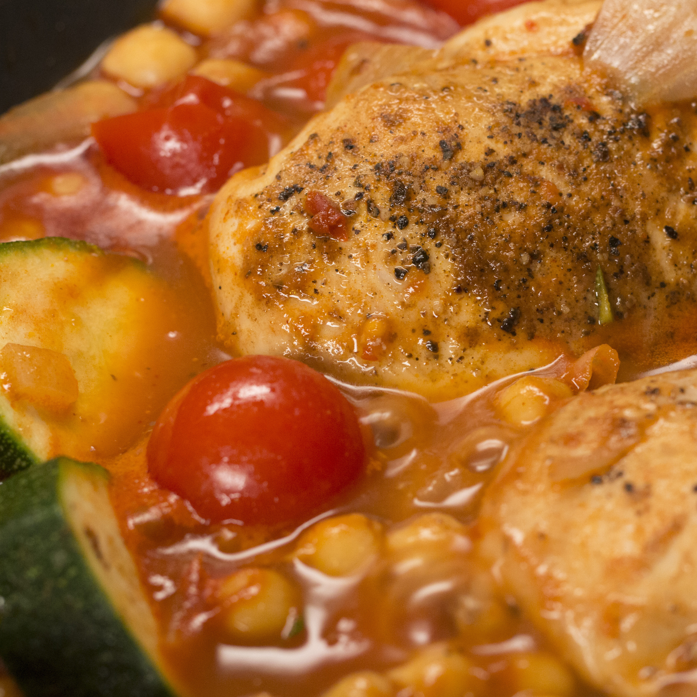

Morrocon Stew
A simple one pot dish of chicken and vegtables.

Description
This easy to make, single pan recipie will take the hassle out of cooking without compromising on flavour!
All the ingredients are mixed and left to simmer together, creating a dish thats bursting with taste and perfect for warming you up on those winter nights.
Ingredients
- 4 chicken thigh fillets
- 2 courgettes
- 250g plum or cherry tomatoes
- 150g button mushrooms
- 2 large onions
- 3 bulbs garlic
- 250 ml creme fraiche
- 150g spinach
Steps
- Preheat your oven to 200 degrees
- Get yourself a large oven dish, or heavy based pot that can go in the oven, pour a little oil in and put it on the hob on a low heat.
- Slice/chop the onions, garlic, courgettes and mushrooms, and toss all of it into the pan, stir until the onions are softened
- Put the whole tomatoes in next, and stir around for further 2 minutes
- Next pour in all the cream fraiche, and about 50ml of water, slightly raise the heat and leave until warmed through
- Now we can place our chicken thighs into the pan, ensuring they are completly covered, then we can foil the dish and place it on the middle shelf of the oven for 35 minutes.
- Remove the dish from the oven and take of the foil, now we can add the spinach in handfuls and stir through so it wilts
- Lastly, using two forks, pull apart the chicken in the broth, and add a dash of salt and pepper to taste
- Thats it! a delicious stew, serve with a hearty slice of bread if desired!